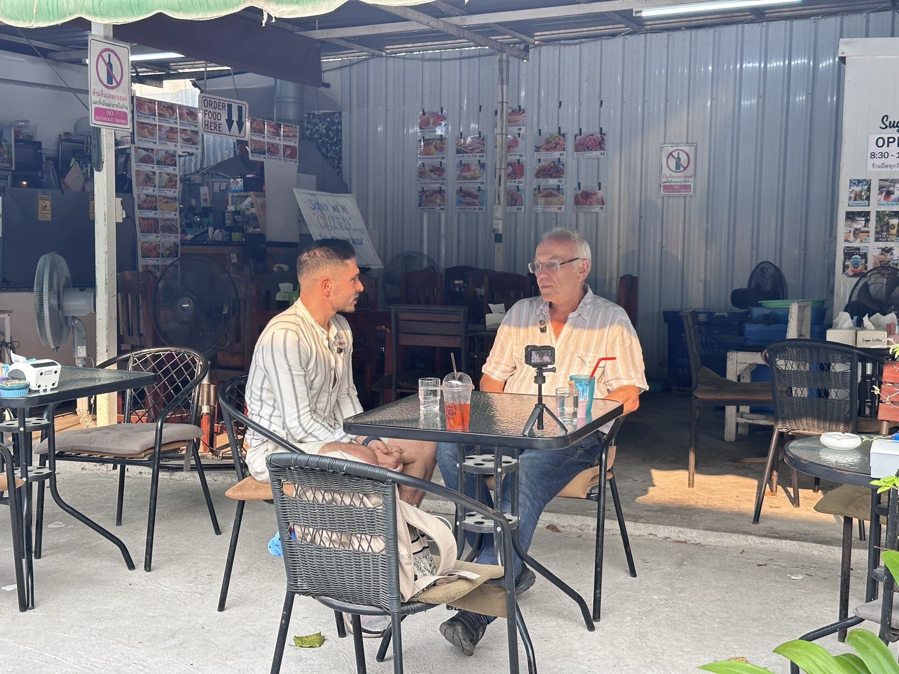

Freiweit mit Nihat ist ein deutschsprachiger YouTube-Kanal über das Leben im Ausland. Keine Hochglanzbilder, sondern Menschen, die ihre Monatsbilanz offenlegen. Genau deshalb bleiben die Zuschauer eine Stunde und länger dran.

Seit 2018 unterwegs, inzwischen acht Jahre und 70 Länder. Am längsten in Thailand, den USA und Vietnam, dort jeweils Monate am Stück, mit Miete, Behördengängen und Stromrechnungen.
Ausgewandert ist er nicht. Er ist der, der die Fragen stellt. Auf dem Kanal setzt er sich zu Menschen, die den Schritt gemacht haben, und fragt nach den Zahlen. Rentner, Frührentner, Handwerker, Selbstständige. Viele dieser Gespräche dauern über eine Stunde, und sie werden zu Ende geschaut.
Der Kanal läuft seit November 2025. Er ist bewusst breit angelegt: Auswandern, Kosten, Immobilien, Reisen und Finanzen, nicht auf ein einzelnes Land festgelegt.
| Sprache | Deutsch |
| Kanal seit | November 2025 |
| Unterwegs seit | 2018, acht Jahre |
| Länder | 70 |
| Schwerpunkt-Regionen | Thailand, Vietnam |
| Themen | Auswandern, Kosten, Rente, Immobilien |
| Veröffentlichung | 3 Longform pro Woche |
88 Prozent der Zuschauer sind über 35, 54 Prozent sogar über 55. Das ist die Altersgruppe, die beim Auswandern tatsächlich entscheidet und das Budget dafür mitbringt.
Ein Drittel des Publikums sitzt zwischen 55 und 64. Das sind die Jahre, in denen der Ruhestand geplant wird, mit allem, was daran hängt: Krankenversicherung, Immobilie, Visum, Kapital.
| Deutschland | 76,8 % |
| Österreich | 7,8 % |
| Schweiz | 6,1 % |
| Männlich | 84,6 % |
| Weiblich | 15,4 % |
| Auf dem Fernseher | 34,8 % |
Alle Zahlen unten stammen aus einem zusammenhängenden Analytics-Zeitraum von 163 Tagen. Kein Spitzenmonat, der als Monatsschnitt ausgegeben wird.
| Aufrufe gesamt | 930.000 |
| davon Longform | 455.828 |
| Impressionen | 4,5 Mio. |
| Wiedergabezeit Longform | 40.438 h |
| Ø Wiedergabedauer Longform | 5:25 |
| Ø Klickrate | 6,6 % |
| Interview mit Gast | 2.336 |
| Solo-Video | 1.204 |
| 16 bis 25 Minuten | 3.660 |
| 25 bis 40 Minuten | 4.237 |
| über 40 Minuten | 5.157 |
Gebucht wird pro Video, deshalb steht diese Tabelle gleichberechtigt neben der linken. Lange Interviews sind die stärkste Einheit des Kanals.
Videos mit einem Gast bringen im Vergleich zu Solo-Videos das Doppelte an Aufrufen, das 4,7-Fache an Abonnenten und das Vierfache an Umsatz. Die Zuschauer sehen in einem 68-jährigen Auswanderer sich selbst in fünf Jahren.
Videos über 16 Minuten erreichen rund dreimal so viele Aufrufe wie kurze. Über 40 Minuten laufen am besten. Das passt zu einem Publikum, das ein Drittel seiner Zeit auf dem Fernseher verbringt und Dokumentationen gewohnt ist.
Rente, Finanzen, Krankenversicherung und Immobilien im Ausland gehören zu den Themen, für die auf deutschsprachigem YouTube am meisten geboten wird. Um diese Zuschauer wird ohnehin teuer konkurriert, hier sind sie versammelt.
Was hier nicht funktioniert, sind Werbeblöcke, die nach Werbung klingen. Was funktioniert, ist ein Produkt oder ein Ort, den Nihat vor der Kamera tatsächlich benutzt oder anschaut.
Ein Abschnitt im laufenden Longform-Video, gesprochen, nicht eingeblendet. Vorab abgestimmt, aber in eigenen Worten.
Wohnanlagen, Hotels, Resorts oder Projekte vor Ort, ehrlich gezeigt, mit Preisen. Das ist das Format mit der stärksten Kaufabsicht auf dem Kanal.
Ein Experte deines Unternehmens als Gesprächspartner, zum Beispiel zu Visum, Versicherung oder Immobilienrecht. Hohe Glaubwürdigkeit, weil der Kanal auf Gespräche ausgelegt ist.
Reise-Ausrüstung, Technik, Apps und Dienste, im echten Gebrauch getestet, mit klarer Aussage am Ende.
Verweise unter dem Video plus ein Artikel auf freiweitmitnihat.com. Die Artikel bleiben auffindbar, lange nachdem das Video aus dem Feed verschwunden ist.
Schreib kurz, worum es geht und für welchen Zeitraum. Ich melde mich mit einem konkreten Vorschlag, inklusive Aufwand und Preis. Wenn es nicht passt, sage ich das auch.